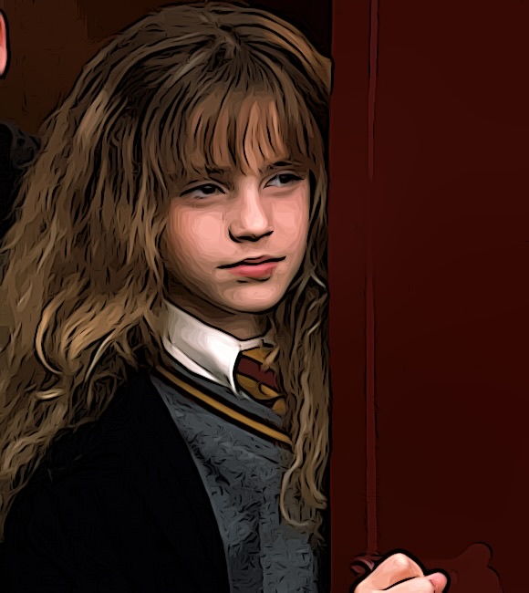

Steckbrief
Name: Hermine Jean Granger
Geburtsdatum: 19. September 1979
Eltern: Muggel-Eltern (nicht-magische Eltern)
Herkunft: London, England
Zauberstab: Rebenholz mit einem Kern aus einem Drachenherzfaser
Zugehörigkeit: Gryffindor
Informationen zum Charakter
Hermine Granger ist eine der Hauptfiguren der "Harry Potter"-Filmreihe.
Sie ist eine brillante und ehrgeizige Schülerin, die über umfangreiches Wissen in der Zauberei verfügt.
Hermine ist bekannt für ihre Intelligenz, Entschlossenheit und ihren Einsatz für Gleichberechtigung von Muggeln und magischen Wesen.
Sie ist eng mit Harry Potter und Ron Weasley befreundet und gemeinsam erleben sie viele Abenteuer während ihrer Zeit in Hogwarts.
Informationen zur Schauspielerin
Hermine Granger wird im Film von Emma Watson verkörpert.
Emma Watson (geboren am 15. April 1990) wurde für die Rolle ausgewählt, als sie elf Jahre alt war.
Durch ihre Darstellung von Hermine Granger erlangte sie weltweite Bekanntheit.
Nach der Harry Potter-Filmreihe setzte sie ihre Schauspielkarriere fort und wirkte in verschiedenen anderen Filmen mit.